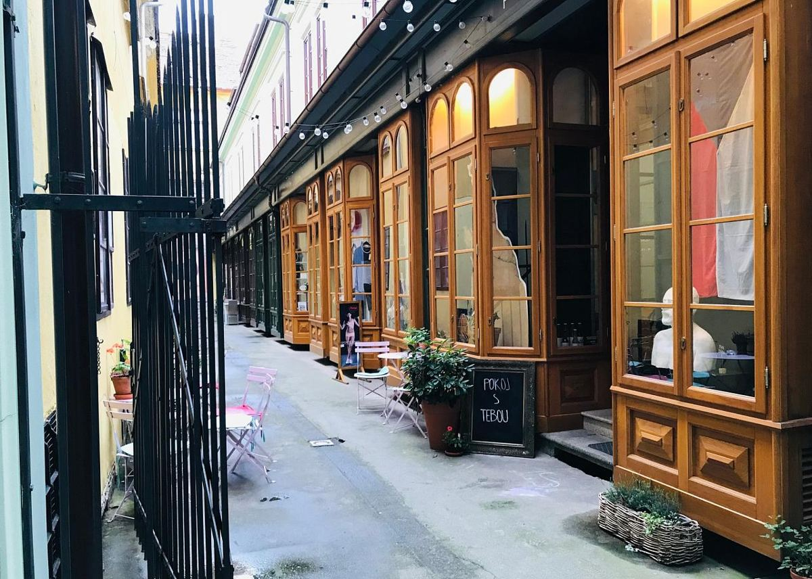
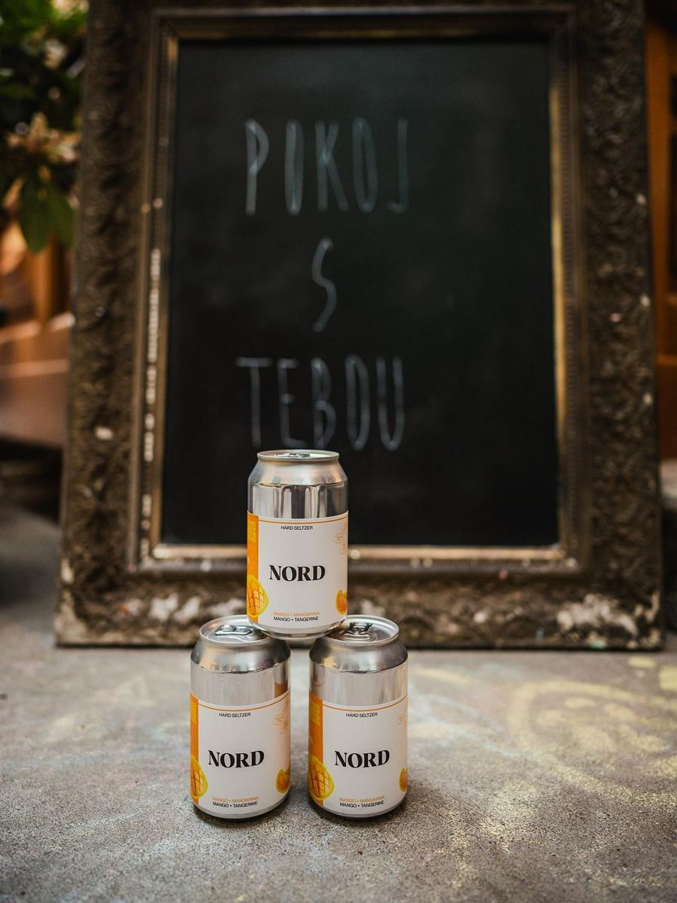
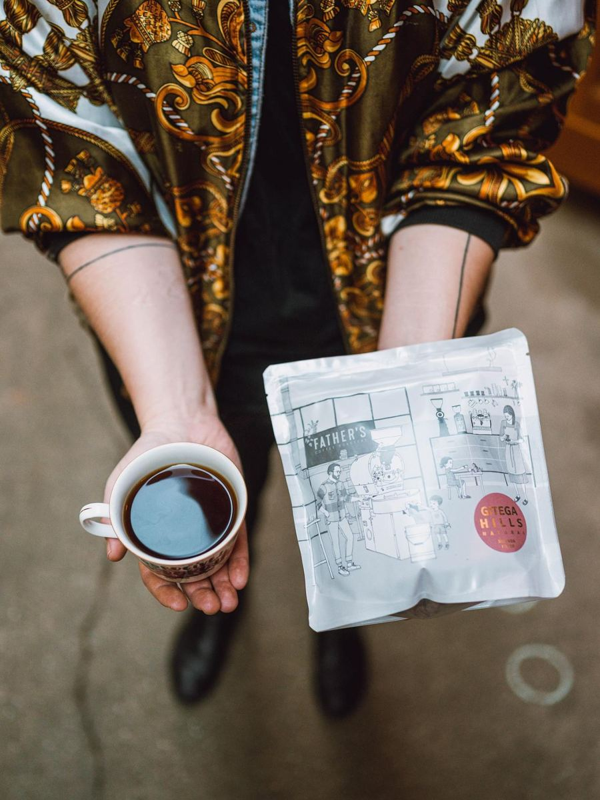

O nás
Malý pokoj v pasáži uprostřed Budějovic, kde se dá v klidu pracovat, učit se nebo jen sedět u kávy.
Pokoj, ve kterém se zdržíte
Pokoj jsme otevřeli v roce 2021 v pasáži, kam se většina lidí dostane náhodou a pak se vrací. Je tu pár stolků, dobrá káva a klid, který na hlavních ulicích nenajdete. V létě tu i v největším vedru držíme příjemných pětadvacet stupňů.
Uvnitř najdete bílé klenuté stropy, mátový pult, kulaté dřevěné stolky a různobarevné staré židle. Místa není moc, takže se rychle zaplní.
Kávu nám praží Father's Coffee Roasters. Dezerty pečeme sami a mění se podle toho, na co máme chuť a co je zrovna v sezóně. Na stěnách visí práce místních umělců.
Pusinka ke kávě
Ke každému kafi dostanete malou pusinku ve tvaru zvířátka. Která to bude, je překvapení.
Galerie na zdi
U nás vystavují místní umělci. Co zrovna visí na zdi, uvidíte při návštěvě. Výstavy
Posezení v průchodu
V létě vynášíme růžové stolky ven do pasáže, pod světelné řetězy a dřevěné výlohy.
Spropitné, které hlasuje
Dvě sklenice, jedna otázka týdne. Drobné hodíte do té, se kterou souhlasíte. Otázka týdne





